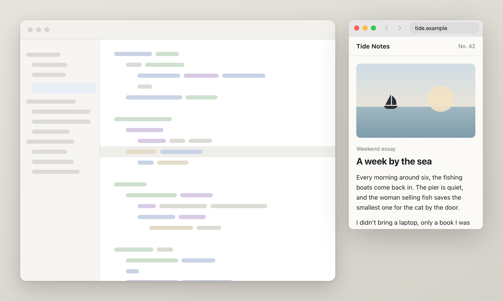

A browser that can get very small
MiniBrowser is a macOS browser kept apart from the one you normally use. Leave a page open in a corner of the screen and keep working.
brew install --cask zhiyozhao/tap/minibrowser
Narrower, simpler
The smallest window is 228 × 360 pt. As it narrows, the new tab, reload, forward and back buttons fold away in that order, and the address bar always stays. Their shortcuts keep working.

Apart from your everyday browser
It is its own app, and its cookies, cache and sign-ins live only in its own folders. It can't see the history or accounts in Safari or Chrome, and the pages it opens don't show up there.
One row of interface
Window buttons, a few controls and the address bar. No bookmarks bar, sidebar or settings page. The tab bar appears only when a second tab is open.
Zoom remembered per site
Zoom you set with ⌘ − and ⌘ = is saved for each site, so a page opens at the same size next time. Handy for dense pages in a small window.
Some things left out on purpose
No downloads, uploads, opening other apps, camera or microphone. MiniBrowser isn't meant to be a full browser.